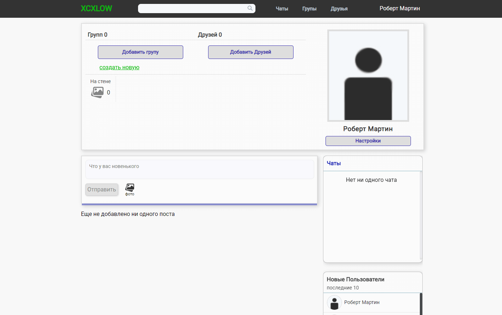
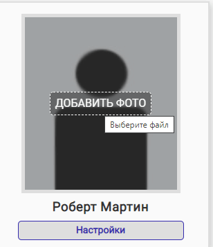

О себе
Зовут меня Дима, 20 лет
Живу в киевский области, готов к переезду в Киев
Учился в Ржищеском техникуме по специальности "Инженерия программного обеспечения", закончил в 2019 году
По стечению обстоятельств устроился Електроментером СДТУ на электростанцию "Трипольская ТЕС" и работаю с ноября 2019
Очень люблю заниматься саморазвитием, все это время изучал а также занимался программированием в частности на JavaScript
О проекте
Frontend - React, Redux
Backend - Node.js, Express
Database - PostgreSQL
Server - Ngnix, кэширование Varnish
Облачное хранение данных - Сначала AWS S3, в данный момент Google Drive
Дополнительно - Socket.io, сборщик webpack
smtp - urk.net
github link - github.com/dem0nchik/social-network
Аккаунт для тестирования
Перейдите на сайт https://xcxlow.xyz
Пароль от тестового аккаунта: qweqwe
Почта от тестового аккаунта: hohij61781@tlhao86.com
Database
Базу данных решил использовать реляционую, PostgreSQL
Схема Базы Данных
Backend
Построен по принципу REST API, на node.js
Обмен данными в режиме реального времени - Socket.io
Frontend
При переходе на страницу будет доступна форма входа/регистрации
Если нажать на ссылку регистрация, откроется форма с регистрацией

Если были введены ошибочные данные, выведет соответсвующие ошибки

Когда данные были введены верно, и нажата кнопка регистрации, на почту отправляеться ссылка с подтверждением
Текст сообщения
Если были введены неверные данные при входе, выводит ошибки
После успешного входа, создаеться сессия, на главной странице показывает ленту новостей, шапку, а так же виджеты
Так выглядит профиль пользователя
Если навести на аватарку, появиться кнопка добавления
После добавления профиль будет выглядеть так, для маленьких аватарок сохраняет в разрешении 40x40, для больших 250x250, так же сжимает размер если нужно, для оптимизации
Так же можно удалить аватарку либо изменить
Если нажать в меню пользователя либо на личной странице ссылку Настройки, откроеться страница настроек. Где можно изменить имя, фамилию, описание о себе, и посмотреть собственную информацию
Например установим описание о себе
Страница просмотра пользователей
Страница профиля другого пользователя
Если нажать на кнопку установить связь, добавит в друзья пользователя. Если нажать убрать - уберет у обоих
На личной странице можно добавлять посты до 6 картинок на один пост, так же картинки сжимает и обрезает до определеного размера если нужно
Если было добавлено больше 6 картинок, появиться диалоговое окно с подсказкой, так же если было добавлено не фото, выведет соответсвующее сообщение
Так будет выглядеть пост на личной странице
Посты можно лайкать, при повторном нажатии уберет лайк
Посты можно комментировать, если комментариев больше 3 при загрузке, выведет первые 3, остальные при нажатии кнопки "загрузить еще"
Если нажать на фото, откроеться компонент просмотра фотографий, с прокруткой
Если нажать на странице другого пользователя кнопку чат, отправиться запрос на создание чата, после чего откроеться странцица чата с пользователем
Так выглядит личный чат с пользователем, когда мы отправили сообщение
Страница просмотра списка чатов
Когда нам отправили сообщение

Так выглядит диалог
Если нажать на личной странице заголовок "друзья" или в шапке ссылку "друзья", откроеться страница просмотра друзей
Если мы не залогинены, можем просматривать только страциы пользователей или групп. На странице пользоватля нельзя лайкать и оставлять комментарии
Server
Серевер находиться на отдельном VPS
Процесс-менеджер для node.js - PM2
Файл настройки Ngnix:
server {
client_max_body_size 70M;
root /var/www/xcxlow.xyz/social-network/desctop/dist;
index index.html index.htm index.nginx-debian.html;
server_name xcxlow.xyz www.xcxlow.xyz;
location / {
try_files $uri $uri/ /index.html;
}
location /api {
proxy_pass http://localhost:8080;
proxy_http_version 1.1;
proxy_set_header Upgrade $http_upgrade;
proxy_set_header Connection 'upgrade';
proxy_set_header Host $host;
proxy_cache_bypass $http_upgrade;
}
location ^~ /socket {
rewrite ^/socket/(.*) /$1 break; #used to send request to base url
proxy_pass http://localhost:8080;
proxy_redirect off;
proxy_pass_request_headers on;
proxy_set_header X-Real-IP $remote_addr;
proxy_set_header Host $http_host;
proxy_set_header X-NginX-Proxy true;
proxy_set_header X-Forwarded-Host $host;
proxy_set_header X-Forwarded-Server $host;
proxy_set_header X-Forwarded-For $proxy_add_x_forwarded_for;
proxy_http_version 1.1;
proxy_set_header Upgrade $http_upgrade;
proxy_set_header Connection "upgrade";
proxy_set_header Host $host;
}
listen [::]:443 ssl http2 ipv6only=on; # managed by Certbot
listen 443 ssl http2; # managed by Certbot
ssl_certificate /etc/letsencrypt/live/xcxlow.xyz/fullchain.pem; # managed b$
ssl_certificate_key /etc/letsencrypt/live/xcxlow.xyz/privkey.pem; # managed$
include /etc/letsencrypt/options-ssl-nginx.conf; # managed by Certbot
ssl_dhparam /etc/letsencrypt/ssl-dhparams.pem; # managed by Certbot
}
server {
if ($host = www.xcxlow.xyz) {
return 301 https://$host$request_uri;
} # managed by Certbot
if ($host = xcxlow.xyz) {
return 301 https://$host$request_uri;
} # managed by Certbot
listen 8088;
listen [::]:8088;
server_name xcxlow.xyz www.xcxlow.xyz;
return 404; # managed by Certbot
}